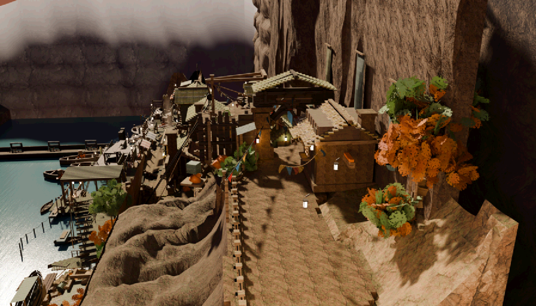
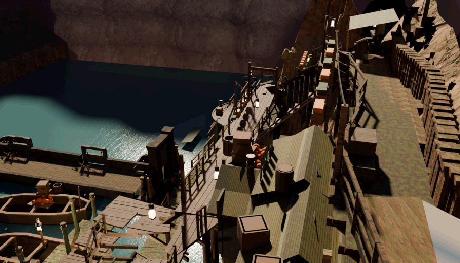
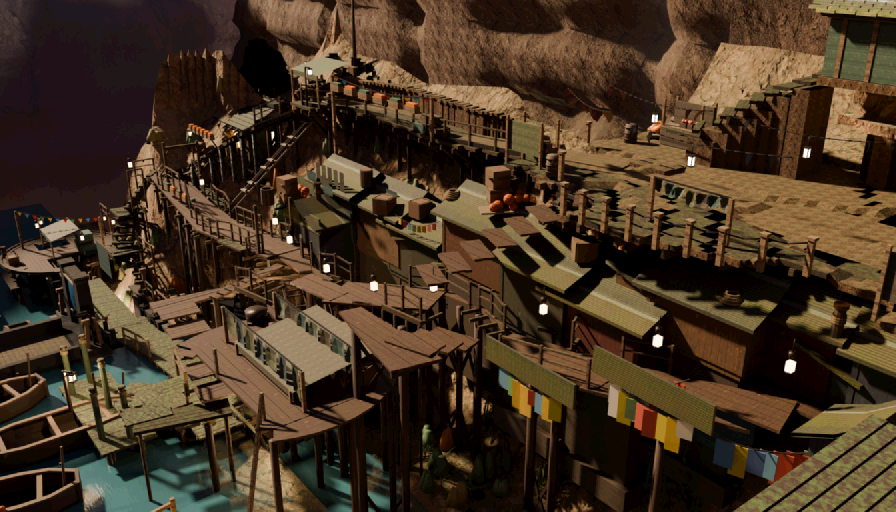
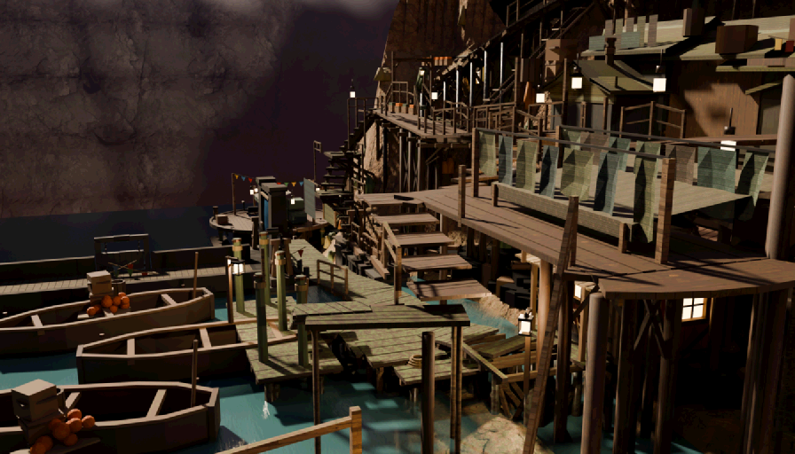

20260808-round4haze · judge gemini:gemini-3.6-flash (pinned) ·
4 plates · naive + checklist · naive N=3 ·
generated 2026-08-08T15:16:24.117Z by tools/scene_redteam.mjs · plates baked 2026-08-08T15:00:02Z .. 2026-08-08T15:10:22ZExactly what each judge call was asked (judge gemini:gemini-3.6-flash, pinned) —
read these first; everything below is these prompts' output. The naive prompt is fixed for the whole
run; the checklist and sceptic prompts are templates filled per plate — shown here filled with this
run's own data. The style paragraph switches between art and blockout mode; this run used
art mode, and that is the version shown.
You are a first-time player. The image is one frame of a video game, exactly what is on
screen. You have never been here, you have no map, and nobody has told you anything.
Critique this frame. Report anything that would make the place HARD TO UNDERSTAND or
HARD TO PLAY. Use exactly these category tokens:
navigation — you would not know where to go, or the way on is ambiguous
occlusion — something blocks your understanding of the space
geometry — incomplete, stray, floating, clipping, or plainly ugly geometry
exit — a door or way out that does not read as a door or a way out
immersion — floating objects, z-fighting, wrong scale, anything that breaks belief
The scene is a finished hand-stylised illustration; a painterly or simplified look is
the intended art style and is not a problem in itself.
RULES. Report only things you can actually point at in this image. Do NOT invent
problems to fill the list, and do NOT list matters of taste. If the frame is fine,
return an empty list — that is a valid and useful answer. At most 6 findings.
severity: 3 = a player would be stuck or would think the game is broken, 2 = clearly
wrong but survivable, 1 = a blemish.
Answer with JSON only, in this exact shape:
{"findings":[{"category":"occlusion","where":"a few words locating it in the frame",
"bbox":[x0,y0,x1,y1],"severity":2,"desc":"one sentence"}]}
bbox is in normalised image coordinates: x 0 at the left edge and 1 at the right, y 0
at the top edge and 1 at the bottom.You are auditing one frame of a video game. The designer says the things listed below
are in this shot and that a player should be able to find them. For EACH item, decide
which of these four is true, using the exact token:
FINDABLE a first-time player would find it AND know what it is
OCCLUDED it is hidden behind something else (say what hides it)
VISIBLE-BUT-ILLEGIBLE part of it is on screen, but it does not read as what it is
— too small, too dark, merged into its background, cropped,
or it looks like some other kind of thing entirely
ABSENT you cannot see it anywhere in this frame at all
Items marked [QUALITY] are different: they are already in frame, so findability is
not the question — how well they HOLD UP is. For those items, and ONLY those, answer
with one of these tokens instead:
CONVINCING it holds up — it reads as the real thing at this scene's own hour
WEAK it reads, but visibly falls short — say exactly what falls short
FAILING it breaks the picture — it reads as a flat fill, a painted plane, or
an unfinished edge of the world
For a [QUALITY] item, put the bbox around the specific area your judgment rests on,
and make "desc" a JUDGMENT with a reason — never a neutral description of what is
there.
The scene is a finished hand-stylised illustration; a painterly or simplified look is
the intended art style and is not a problem in itself.
YOU ARE NOT TOLD WHERE ANYTHING IS. Do not guess a position to be helpful: if you
cannot find it, ABSENT is the correct and useful answer. If you DO find it, give the
bbox where you see it so your reading can be checked against the model.
Two rules that keep the answers useful. (1) Names like "shelf-west" are the designers'
internal names for other areas; a player never sees them, so NEVER report a missing
sign, label or name as a problem — judge only whether the thing itself can be found and
recognised for what it is. (2) Judge what is DRAWN, not what a game would normally add:
no icons, markers or waypoints exist in this art and their absence is not a finding.
Items:
1. Valley Gate — a gate (town's only land entrance; arch + palisade)
2. Gatehouse (toll) — a building
3. Cargo Winch (head) — a machine (lowers goods from the road to the quay)
4. The Valley Road — a road head (THE MOUTH OF THE VALLEY ROAD — the town's land threshold, at the bottom edge of the gate frame. It is a PORTAL, not a place: it carries the overworld exit 'valley-gate-out' and the arrival spawn, and the carriageway runs on PAST it (tools/gate_lib.py SPINE) and off the bottom of the plate, so the road reads as continuing to the valley rather than stopping at a rim. mapVisible false: the town map screen still shows the arch (valley-gate) as the way in — this is the doorstep, not a destination.)
5. the route between Valley Gate and Gatehouse (toll) — a road
6. the route between Gatehouse (toll) and Cargo Winch (head) — a road (BET 2 RE-ROOT 2026-08-06: was 'valley-gate -> winch-head'. The winch road now leaves from the GATEHOUSE and bows north (waypoint y 7.4) so the gate square fans clean: entry road west, gatehouse road, THE ONE DESCENT east, winch road along the north. The old valley-gate origin shared the descent's own head ground, and the wide (2.2 u) descent flight cannot coexist with a road ribbon inside walkGround's 0.73 step window there — the 2026-08-01 STAMP on the old edge (ribbon 0.340 m over the top treads REFUSED the descent) is the same class, solved this time by removing the road from the corridor instead of nudging it 0.3 u clear.)
7. the route between Valley Gate and The Valley Road — a road (THE ENTRY ROAD. The player walks IN up this and OUT down it (USER REDLINE #4). It passes the toll house's own door (t2c_G5_gatehouse_door, x 10.9..12.1 at y 3.56) on its north side and holds a verge off the chopped gorge lip: carriageway half-width 1.87 m against Terrain.rim() 9.05..9.20 over x 1.2..10.6, so the guard rail stands between the paving and the drop instead of 4 m out on empty apron. SUPERSEDES 'valley-gate__porters-yard'.)
8. the route between Cargo Winch (head) and Cargo Winch (foot) — a winch (cargo only — NOT walkable; pure set dressing)
9. the way out of this area on foot towards shelf-west — a path that carries on out of the frame
10. a door / entrance you can go through ("Leave Dellhollow")
11. Inn — The Boatmen's Rest — a shop inn (travelers stranded waiting for lock passage)
12. Item Shop (chandlery skin) — a shop item (lamp oil, rope, pitch, provisions; cantilevered out over the gorge)
13. [QUALITY] The world at the frame edges — the terrain, backdrop and distant geometry BEYOND the built set, at the borders of the picture. Does the world hold up all the way to every edge of the frame, or does it visibly end, thin out, or turn rough and unfinished somewhere inside the frame (bare terrain, abrupt cut-offs, missing backdrop)? Say where.
14. [QUALITY] The water surface — water covers about 6.9% of this frame (near Harbor Deck, Fish dock, Moorage). Judge ONLY those pixels. Does that surface read as WATER — some transparency toward the shallows, believable colour, flow or reflection, and convincing contact where it meets banks, decks and structures — or as a painted / solid plane? Judge the surface AND its edge contact; say what fails or what carries it, and put the bbox on the water itself.
Answer with JSON only, one entry per item, in order:
{"items":[{"n":1,"verdict":"FINDABLE","where":"a few words","bbox":[x0,y0,x1,y1],
"desc":"one sentence saying how you recognised it, or what hides it, or why it does
not read"}]}
bbox is normalised: x 0 left to 1 right, y 0 top to 1 bottom. Use null when ABSENT.You are the sceptic on a game art review, and your job is to protect the team from
wasted work. Below are criticisms somebody has made of THIS frame. For each one,
decide honestly whether it is a REAL problem for a player, or whether it is a
misreading of the picture, a matter of taste, or simply normal for this art style.
UPHOLD only if you can find the same thing in the frame yourself AND it would really
cost a player something. REFUTE if the thing described is not there, is not what the
critic thought it was, is normal for the style, or does not matter. Do not be polite:
refuting a weak criticism is the useful answer.
The scene is a finished hand-stylised illustration; a painterly or simplified look is
the intended art style and is not a problem in itself.
Claims:
1. [geometry] top center cliff edge: The cliff geometry cuts off abruptly in a straight vertical line, exposing the background void.
Answer with JSON only, one entry per claim, in order:
{"verdicts":[{"n":1,"verdict":"upheld","why":"one sentence"}]}You are the sceptic on a game art review. The claims below are about objects that the
DESIGNER'S OWN MAP says really are in this shot. That they belong here is NOT in
question, and "it is not there" / "this area would not have one" / "expecting it is
arbitrary" are NOT valid refutations. The only question is whether the claim about how
well a player can FIND or READ the object is fair.
UPHOLD if, looking at the frame yourself, you agree the object is genuinely hard to
find, hidden behind something, or does not read as the kind of thing it is. REFUTE if
you can point straight at it and it is plainly legible, or if the complaint is really
about a missing sign, label, icon or name rather than about the art.
Claims tagged [quality] are JUDGMENTS that a sky, a backdrop, the world at the frame
edges, or a water surface fails to hold up as art (a flat fill, a painted plane, an
unfinished edge of the world). For those, UPHOLD if your own look at the frame agrees
it falls short in the way described; REFUTE only if the surface genuinely holds up in
this frame. "It is normal for games" is not a refutation of a quality claim.
The scene is a finished hand-stylised illustration; a painterly or simplified look is
the intended art style and is not a problem in itself.
Claims:
1. [navigation] waterfront cluster near harbor: Inn: VISIBLE-BUT-ILLEGIBLE — Blends in with surrounding wooden structures without defining signage.
Answer with JSON only, one entry per claim, in order:
{"verdicts":[{"n":1,"verdict":"upheld","why":"one sentence"}]}The gate is recall against complaints the user made by hand, before this tool existed. The judge is never told what the complaints are; it is shown the shipped plate that holds the object and asked to criticise it. Two numbers because there is a real ambiguity: exact plate counts the finding only on the one shot whose frame most nearly holds what the user circled; any plate counts it on any shot holding the same object. Not reproducible, and said plainly: all five references were screenshot from a free orbit camera, from angles no shipped plate holds — so this measures whether the same defect is catchable from the shipped frames, not whether the judge can reproduce the user's screenshots.
21 survivors from 31 raw findings over 4 plates. Deduped across shots: a finding seen on more than one plate is listed once and says so.
The judge re-found something the repo already knows about. Useful as a confirmation that the instrument sees real defects; not new work.
Not matched to anything tracked. This is the bucket that earns the tool its keep — and the bucket a human must read before anybody acts on it.
Material and detail complaints against a massing blockout. Correct observations, wrong stage.
Boxes are the judge's own bboxes: orange = naive, blue = checklist. This is the user's own annotated-screenshot format, machine-made.




This tool looks at pixels. Seam-canon §10.3 (amended after the loop-stairs post-mortem) is the reason that sentence needs a warning label:
“in frame” ≠ “visible” ≠ “unobstructed ray” ≠ catches a foot
The loop-stairs flight was 72% visible, correctly framed, unoccluded and handsome — and unwalkable,
because walkGround keeps the highest surface in the step window and the neighbouring
flight's top tread covered its head. It caught a foot in 0 of 72 entries. No critique of that plate
could ever have found it. What this tool cannot see, and where each of those defects is
caught:
tools/ls_nav_probe.mjs, seam_walk.mjsboxSolid, seam_test.mjstools/nav_eval.mjs (it walks the answer)seam_test.mjs, transition_test.mjscine_visprobe.pyA finding here is a perception, and a perception is not a measurement. Geometry findings ship
with a geometry_audit --region command for exactly this reason: the next step is to measure
it, not to believe it.
refuted.json with its number. 0 claimed the subject was ABSENT —
the aim rule inverts there and the census abstained; 3 had no derivable
subject (frame-edge-world, and verdicts the judge returned without a box). Box check: 6/19 (32%) of the
judge's checklist boxes contain the point the ray census projected — the drawn rectangles are
only as trustworthy as that number. Raw replies in raw/, findings in
findings.json, discarded claims in refuted.json.